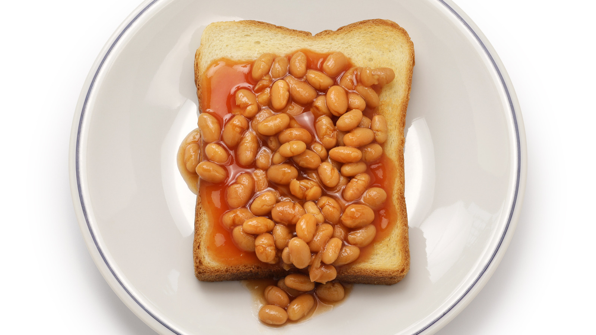

How to BEANS ON TOAST (Authentic)

Description
Beans on toast has been eaten for years every day in the UK for breakfast, lunch and dinner. It’s a super simple dish,
but it’s comfort food on a plate for many of us.
I hope you’ll enjoy it, too! (I won't)
Ingredients
Steps
- Put the Heinz beans into a small pot over medium low heat.
- Put the bread in the toaster, and make the toast as desired.
- spoon ⅓ tin of the BEANS over the top of toast